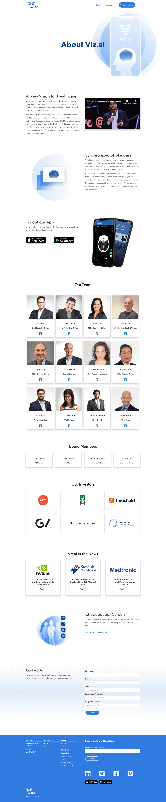
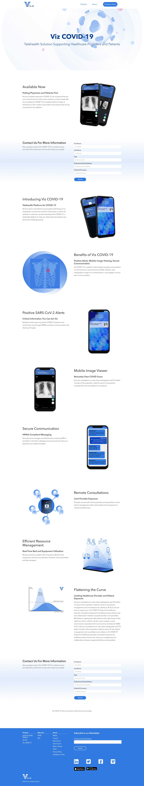
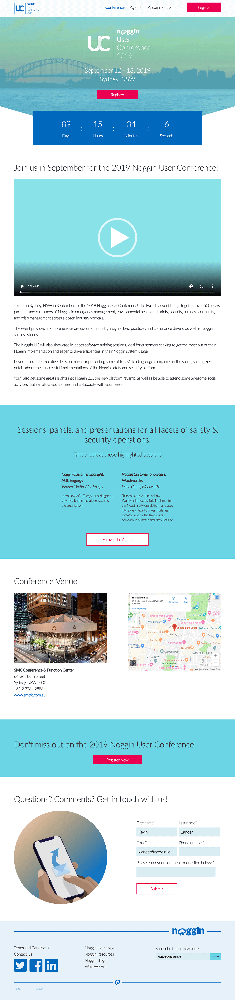
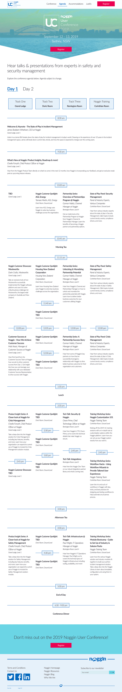
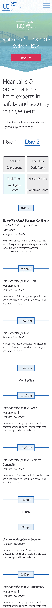
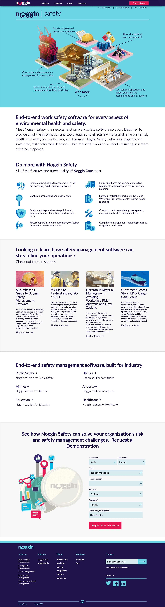
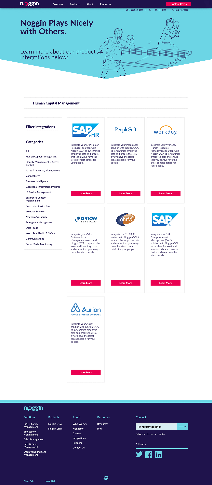
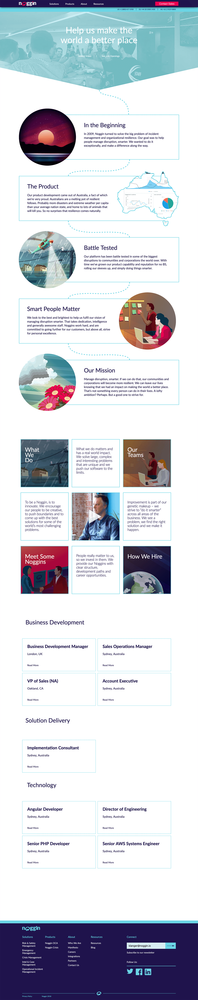

![When Viz.ai added a new product to their suite of apps they needed to make a webpage that their target audience understood. Highlighting the features that hospitals care about, like improving time to care and activity statistics for all hospitals in a system, gives prospective customers the needed information they need to become a marketing qualified lead. Working as a team, marketing was able to create a webpage that captures lead generation successfully. <a href='https://www.viz.ai/analytics' target='_blank' rel='noreferrer'>Visit the live site→</a>](Assets/viz_web_analytics.png)
Visit the live site→">
![When Viz.ai went through a website migration to Webflow they took the opportunity to restyle and rebrand their website. Previously there was no one page for their stroke platform as their homepage did double duty for this task. Now, the stroke platform is separated out into a long form page and goes over all the products associated with it. The page also serves to deliver marketing qualified leads to the sales team. <a href='https://www.viz.ai/ischemic-stroke' target='_blank' rel='noreferrer'>Visit the live site→</a>](Assets/viz_web_stroke.png)
Visit the live site→">




Visit the live site→">
Visit the live site→">
It is always gratifying to see your finished work up on the web and being used by all the users coming to your site. Web design incorporates many design mediums like, UI, UX, Graphic, Motion, and more. Whether I'm designing a site or building it I always think about the end user and how they will interact with the page. I want to make sure the information they are getting is clear and helpful and that the structure of the site is easy for them to use.
I am familiar with HTML, CSS, and JavaScript. This includes Sass, jQuery, HubL, and many other variants on those languages. I have also gotten very adept at researching tough problems and finding creative solutions. I have worked with CMS's like HubSpot and WYSIWYG editors like Webflow. I am also familiar with Figma, Sketch, Illustrator, Photoshop, and practically any other design tool for wireframes or mocks. If I haven't used a particular tool before, rest assured I will be quick to pick it up and get going with it.
Here are some live examples of sites I have designed and/or built.
Animations can be a powerful tool on a website to draw attention, convey information, or develop interest. Generally, the most web friendly way to do this is with HTML animations. There are a variety of ways you can achieve the animations either by hand coding or using other solutions like Hype3 or Google Web Designer.
This animation was designed to illustrate the simplicity of the Noggin wizard to set up different solutions. Several animations were made for each specific solution page created, this one being for security. The animations themselves were made in After Effects using Illustrator assets and shape layers and then exported using the Lottie's Bodymovin plug-in. I further expanded on the interaction with some javascript by starting the animation on mouse over and then having them be able to replay on mouse click.